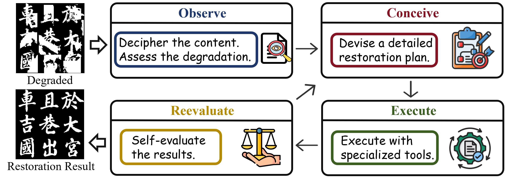
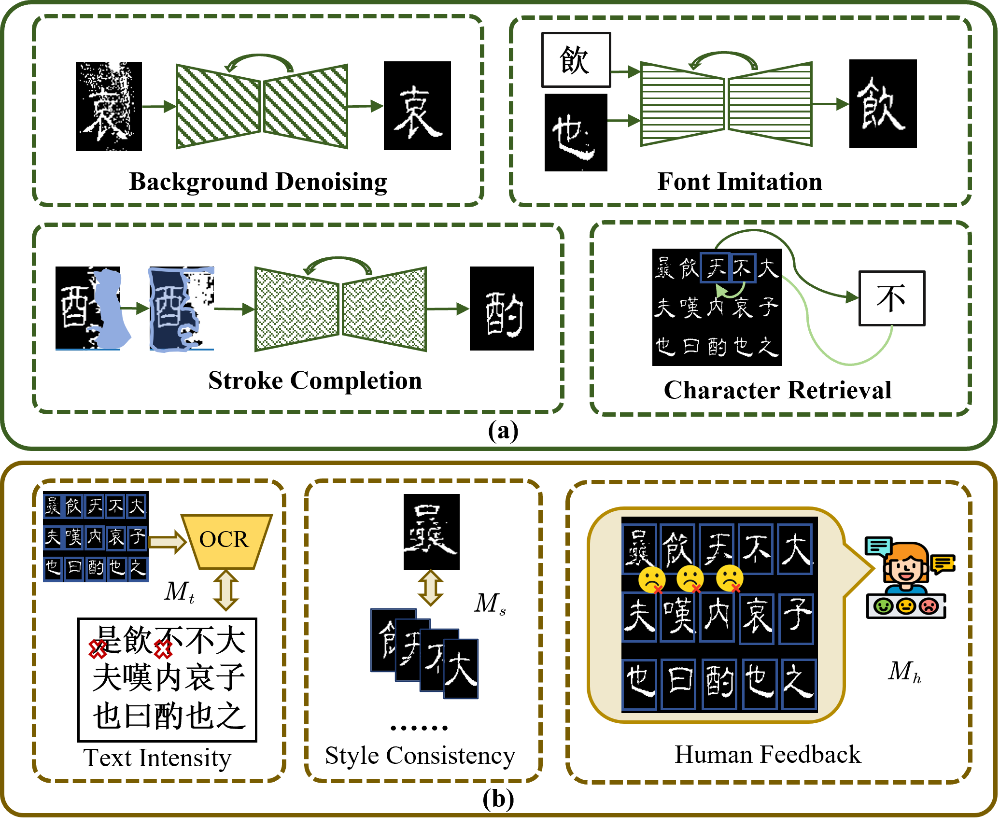
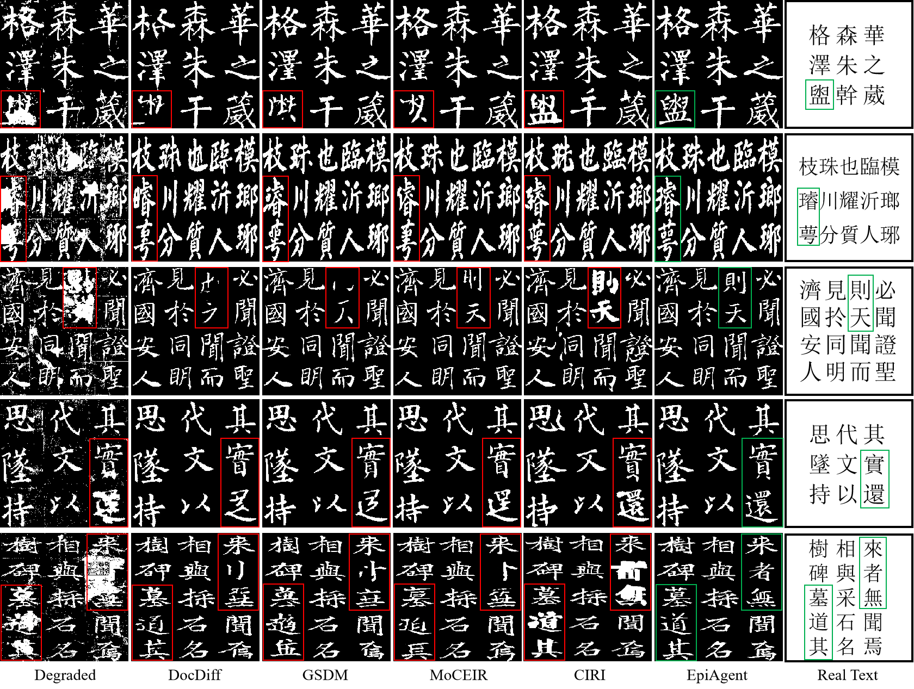

CVPR 2026 | Agentic AI | Ancient Inscription Restoration
EpiAgent: An Agent-Centric System for Ancient Inscription Restoration
EpiAgent restores degraded ancient inscription images by coordinating multimodal analysis, experience-guided planning, specialized restoration tools, and iterative reevaluation.
Restoration Examples
Drag each slider from Damaged to Restored.

4
closed-loop stages
22.14
PSNR on Testing Set S
0.9069
1-NED on Testing Set S
84.18%
Top-3 expert preference
Abstract
Ancient inscriptions preserve cultural memory but often suffer from coupled visual and textual degradation caused by weathering, damage, and human intervention. Existing AI restoration pipelines are usually rigid and struggle to generalize across complex real-world inscriptions.
EpiAgent formulates inscription restoration as a hierarchical planning problem. An LLM-based central planner follows an Observe-Conceive-Execute-Reevaluate loop, coordinating multimodal perception, historical experience, specialized tools, and self-refinement to recover both textual authenticity and visual fidelity.
Observe | Conceive | Execute | Reevaluate
Agent-Centric Restoration Loop
The central planner adapts restoration actions to each inscription instead of running a fixed one-pass pipeline.

The four-stage loop mirrors how epigraphers combine visual inspection, historical reasoning, restoration practice, and verification.
Specialized Restoration Toolkit
EpiAgent avoids a monolithic image-to-image restorer. It schedules modular tools at character level, allowing different degradation patterns to receive different restoration sequences.
- Background denoising: removes surface noise while preserving visible stroke structure.
- Stroke completion: inpaints missing or severely damaged stroke regions.
- Font imitation: synthesizes stylistically consistent glyphs from high-quality exemplars.
- Character retrieval: searches matching characters in the same inscription as a fallback for irreparable cases.

Tool execution is paired with multi-perspective evaluation so that the planner can refine the restoration trajectory.
Experiments on CIRI
Restoration Quality and Expert Preference
EpiAgent is evaluated on synthetic and real Chinese Inscription Rubbing Images with both objective metrics and expert studies.
Main Quantitative Comparison
| Test Split | Method | PSNR | SSIM | LPIPS | CLIP-IQA | MUSIQ | MANIQA | NIMA | 1-NED |
|---|---|---|---|---|---|---|---|---|---|
| Testing Set S | IR3 | 21.15 | 0.9540 | 0.0388 | 0.8987 | 53.35 | 0.4429 | 0.5547 | 0.8855 |
| Testing Set S | EpiAgent | 22.14 | 0.9684 | 0.0254 | 0.9004 | 53.98 | 0.4553 | 0.5576 | 0.9069 |
| Real Set R-I | IR3 | — | — | — | 0.9370 | 49.77 | 0.4090 | 0.5334 | 0.5539 |
| Real Set R-I | EpiAgent | — | — | — | 0.9393 | 50.29 | 0.4179 | 0.5414 | 0.5766 |
| Real Set R-II | IR3 | — | — | — | 0.9346 | 49.58 | 0.4082 | 0.5298 | 0.5374 |
| Real Set R-II | EpiAgent | — | — | — | 0.9388 | 49.94 | 0.4157 | 0.5381 | 0.5546 |
PSNR and SSIM are higher better; LPIPS is lower better. Real Set R-I and R-II report no-reference quality metrics plus end-to-end 1-NED.
Expert User Study
| Method | Top-1 Ranking (%) | Top-3 Ranking (%) | Mean Ranking |
|---|---|---|---|
| CharFormer | 3.72 | 26.57 | 52.39 |
| DocDiff | 8.38 | 46.63 | 63.46 |
| GSDM | 5.75 | 39.55 | 60.70 |
| Restormer | 0.89 | 9.20 | 28.10 |
| MambaIR | 3.88 | 32.74 | 57.55 |
| PromptIR | 0.63 | 7.75 | 20.96 |
| MoCE-IR | 1.52 | 11.33 | 36.62 |
| IR3 | 15.60 | 51.14 | 67.41 |
| EpiAgent | 59.66 | 84.18 | 82.11 |

Qualitative results show EpiAgent recovering damaged glyphs while preserving calligraphic consistency.
Ablation Insights
| Ablation Group | Variant | Metric | Set S | Set R-I | Set R-II | Takeaway |
|---|---|---|---|---|---|---|
| Observation | MLLM | 1-NED | 0.6481 | 0.5509 | 0.4336 | General perception alone struggles with coupled visual-textual degradation. |
| Observation | MLLM + CLM | 1-NED | 0.9211 | 0.8759 | 0.8486 | Specialized text correction gives a large gain. |
| Observation | MLLM + CLM + RAG | 1-NED | 0.9742 | 0.9694 | 0.9606 | Corpus retrieval provides the strongest textual grounding. |
Planning Strategy Ablation
| Strategy | PSNR | SSIM | LPIPS | 1-NED |
|---|---|---|---|---|
| Random | 18.53 | 0.9078 | 0.0869 | 0.7702 |
| Fixed Scheme A | 21.19 | 0.9605 | 0.0371 | 0.8814 |
| Fixed Scheme B | 20.78 | 0.9526 | 0.0401 | 0.8935 |
| Experience-guided | 22.14 | 0.9684 | 0.0254 | 0.9069 |
Evaluation and Refinement Ablation
| Text Authenticity | Style Consistency | Expert Feedback | PSNR | SSIM | LPIPS | 1-NED |
|---|---|---|---|---|---|---|
| No | No | No | 21.48 | 0.9593 | 0.0305 | 0.8969 |
| Yes | No | No | 21.59 | 0.9616 | 0.0292 | 0.9026 |
| No | Yes | No | 21.73 | 0.9632 | 0.0284 | 0.8994 |
| Yes | Yes | No | 22.02 | 0.9668 | 0.0279 | 0.9041 |
| Yes | Yes | Yes | 22.14 | 0.9684 | 0.0254 | 0.9069 |
Takeaway
The main result is not just a stronger restorer, but a restoration process: EpiAgent turns preservation into a deliberative loop where visual evidence, textual knowledge, tool selection, and expert judgment can reinforce each other.